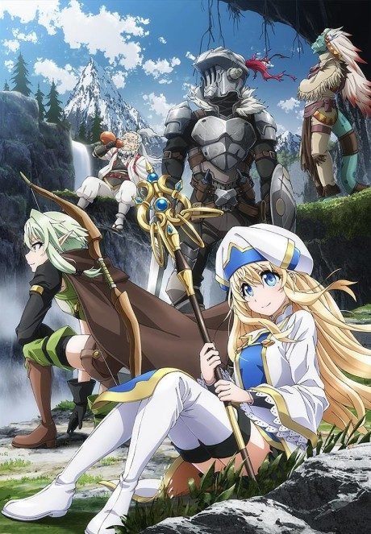
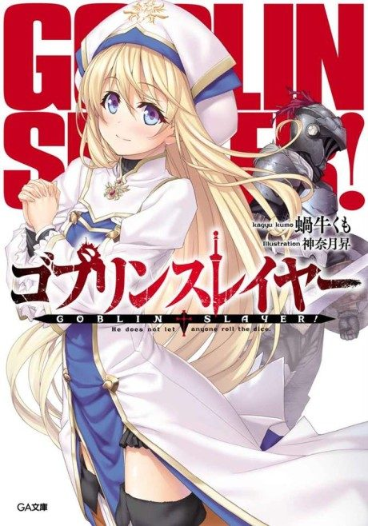
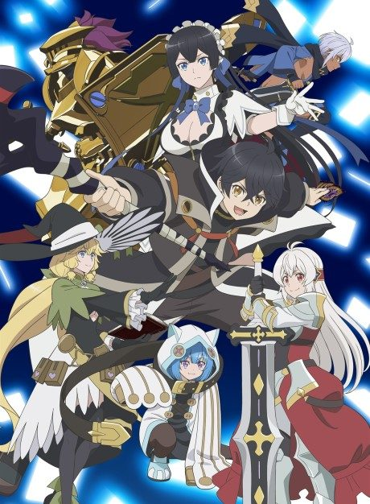

GOBLIN SLAYER
ゴブリンスレイヤー
A young priestess's first adventure goes horribly wrong until she's saved by Goblin Slayer, a man who only hunts goblins.
After the anime, read the light novel from Volume 9.
7.1AniList score
—Animeter, no votes yet
24episodes, 2 seasons
Rate it or report where you stopped
2 seasons, 24 episodes
In airing order. Episode numbers on this site count straight through every season, so season 2 starts at episode 13.
1
2018 · TV
GOBLIN SLAYER
Episodes1–1212 ep
2
2023 · TV
GOBLIN SLAYER II
Episodes13–2412 ep
Films, OVAs and specials
Not counted in the episode numbers above.
·
2020 · Film
GOBLIN SLAYER -GOBLIN’S CROWN-
Sources: AniList
More like GOBLIN SLAYER
 Manga Vol. 157.6
Manga Vol. 157.6
 Done8.5
Done8.5
 Unclear7.1
Unclear7.1
 Manga Ch. 3408.9
Manga Ch. 3408.9
 Manga Ch. 577.4
Manga Ch. 577.4
 Manga Ch. 888.4
Manga Ch. 888.4
 Original8.5
Original8.5
 Film7.3
Film7.3
Original6.4
Ninja Kamui Unclear8.0
Unclear8.0

Manga Vol. 37.0 Manga Ch. 346.1
Manga Ch. 346.1